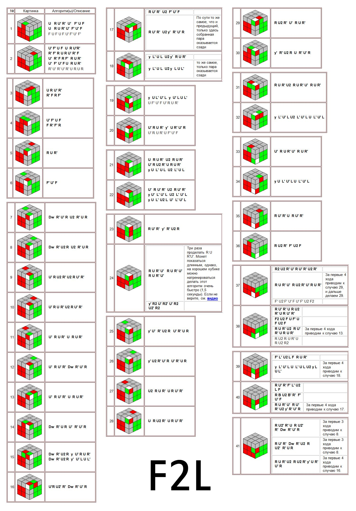

Back
Step: #2
How to solve the first 2 layers
These steps will require some intuitive understsanding of the concept "inserting" a cube in to a hole.
There will be many ways to perform algorithms but #1 (and it's mirrored version, same algo just ever step is opposite. U - U', B - B', etc)
- 1. Place your CROSS on the bottom so the yellow center is on top.
- 2. Follow this notation for turns:
U: Top Clockwise
U': Top Counterclockwise
R: Right Clockwise
R': Right Counterclockwise
L: Left Clockwise
L': Left Counterclockwise
F: Front Clockwise
U': Front Counterclockwise
B: Back Clockwise
U': Back Counterclockwise
x: X Axis Clockwise Rotation
x': X Axis Counterclockwise Rotation
y: Y Axis Clockwise Rotation
y': Y Axis Counterclockwise Rotation
z: Z Axis Clockwise Rotation
z': Z Axis Counterclockwise Rotation
- 3. Do not execute algorithms and turn the cube unless you see "x, y, z".
- 4. Ignore the russian
- 5. These patterns will be found on your cube, with your color, find your situation and try the algorithm.
- 6. Keep the slot that is empty on your right side while executing algorithms.
- 7. Move on to OLL
